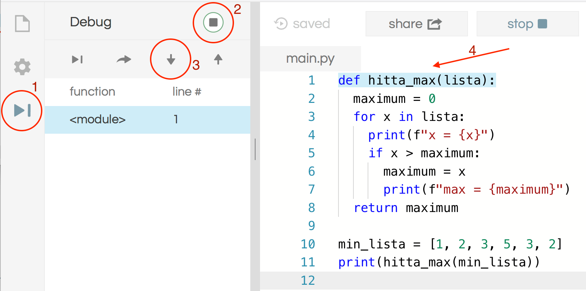

Avlusning
nybörjare, text, debugging- 1. Kompileringsfel
- 2. Exekveringsfel
- 3. Logiska fel
- 4. Testning
- 5. Debugga som en detektiv
- 6. Extra: Automatisk testning
När man programmerar kan det bli fel på många olika sätt. Felen kallas buggar eller bugs på engelska. Buggar är en naturlig del av all programmering. I den här uppgiften skall vi skapa lite olika slags buggar så att vi lättare kan hantera dem när de senare händer på riktigt.
Koden i denna uppgift är provkörd på http://repl.it/languages/python3 (Python 3).
Kommentar:
Ordet "bug" är en term för tekniska fel av olika slag, och det finns belägg för den sedan åtminstone 1870-talet (Wikipedia, Software bug). I programmeringssammanhang säger man ibland "lus" på svenska, men det försvenskade "bugg" är vanligare.
1. Kompileringsfel
Vi skall börja med att skapa buggar som kallas kompileringsfel. Det är fel som kan upptäckas med en analys av programmet, utan att man behöver köra det.
Många av dessa fel handlar om att strukturen på programmet är fel, dvs att programmet inte följer språkets syntax.
Andra kompileringsfel kan handla om att man använder namn som inte är definierade, eller att man har för många eller för få parametrar till en funktion.
Kommentar:
Att kompilera ett program betyder att det översätts till någon form av maskinkod, alltså primitiv kod som en dator kan förstå, t.ex. med nollor och ettor. I samband med detta upptäcks olika fel. Python brukar dock inte kompileras till maskinkod, utan i stället interpreteras programmen, dvs de tolkas direkt av Python. Det betyder att Python-program normalt går långsammare än program i andra programspråk som t.ex. Java och C.
Även om Python är ett interpreterat språk så kan vi ändå prata om kompileringsfel, eftersom det står för fel som kan upptäckas innan man kör programmet. En vanlig Python-interpretator ger inte dessa fel förrän man försöker köra programmet. Men i Python 3 på repl.it kontrolleras dessa fel av editorn, innan man kör programmet. Försöker man köra programmet får man samma fel av interpretatorn.
Uppdrag: Klistra in följande (korrekta program) i Python-editorn och prova att köra det. Det bör fungera utan fel.
def square(x):
result = x * x
return result
y = square(3)
print("Resultatet är " + str(y))
1.1 Indenteringsfel
Vi börjar med att skapa indenteringsfel, alltså att antalet blanktecken i början av raderna inte stämmer med vad Python förväntar sig.
Uppdrag: Prova att ändra indenteringen genom att lägga till ett blanktecken i början av första raden. Vilket felmeddelande får du? Ändra tillbaka, och prova på något annat ställe. Notera att du inte alltid får samma felmeddelande och inte alltid på samma rad som du ändrat. Varför kan det vara så? Försök förstå felmeddelandena.
Kommentar:
Ett fel kan ofta rättas på flera olika sätt. Det viktiga för Python är att satserna som hör till en def är indragna lika mycket, inte att det är just 2. Det går lika bra med 3.1.2 Glömma kolon
Det är lätt att glömma ett kolon efter en def eller en for.
Uppdrag: Prova att ta bort kolon i slutet av def-raden. Kan du förstå felmeddelandet?
1.3 Andra kompileringsfel
Det finns många andra kompileringsfel man kan göra.
Uppdrag: Försök skapa ett annat kompileringsfel. Prova till exempel att ta bort sista parentesen på raden y = square(3), eller att ändra namnet från y till z. Vilka andra kompileringsfel kan du komma på att göra?
2. Exekveringsfel
Vissa fel upptäcks inte förrän man kör programmet. Sådana fel kallas exekveringsfel eller runtime-fel eller runtime exception. Man kan också säga att programmet kraschar.
Det blir exekveringsfel i de lägen när det inte finns något rimligt beteende för programmet. Här skall vi titta på ett par exempel.
2.1 Division med noll
Vad händer när man dividerar ett tal med noll?
Uppdrag: Skriv in följande program och provkör det. Vad händer?
x = 10/0
Svar
Att dividera med noll ger inte något definierat värde. Programmet kraschar och skriver ut ett felmeddelande.2.2 Typfel
Ett vanligt exekveringsfel i Python är typfel, det vill säga att en operation förväntade sig ett värde av en viss typ, t.ex. sträng, men fick ett värde av en annan typ, t.ex. heltal.
Kommentar:
Många programmeringsspråk gör mycket analys av programmen för att upptäcka så många typfel som möjligt innan man kör. Men Python gör förhållandevis lite analys, och typfel upptäcks i stället när man kör programmet.Uppdrag: Prova att köra följande program. Vad blir det för fel? Förstår du felmeddelandet?
x = 5
y = "hej"
z = x + y
print(z)
Kommentar:
Programmet försöker addera ett heltal och en sträng. Det går bra att addera två heltal, och det går bra att addera två strängar (det betyder konkatenering av strängarna). Men när man adderar ett heltal till en sträng finns det ingen rimlig tolkning, och programmet kraschar.3. Logiska fel
Även om programmet inte kraschar så kan det finnas logiska fel i programmet, det vill säga att det inte räknar ut det man tänkte sig.
Ett viktigt sätt att försöka undvika logiska fel är att skriva så tydlig kod som möjligt, med bra namn på variabler och funktioner, och att undvika onödigt krångel.
3.1 Refaktorisering
Att förenkla sin kod kallas att refaktorisera den. Det betyder att man gör koden tydligare och mer lättläst, utan att man ändrar vad den gör. Till exempel kan man byta namn på variabler så att man bättre förstår vad de representerar. Och man kan införa en ny funktion för att sätta ett bra namn på en beräkning.
Uppdrag: Titta på följande program. Kan du lista ut vad det gör? Kan du refaktorisera programmet så att det blir tydligare vad koden gör?
x = int(input("Skriv in antal minuter: "))
p = 0
while x > 60:
x = x - 60
p = p + 1
print(f"Det blir {p} timmar och {x} minuter")
Tips! Kan du hitta på bättre namn på variablerna? Kan du införa en funktion som gör beräkningen och som du namnger så att man förstår vad den gör?
Se nästa uppgift för exempel på hur koden kan refaktoriseras.
3.2 Hitta felet
Här är en refaktoriserad version av koden i förra uppgiften. Förhoppningsvis tycker du också att koden är lättare att förstå nu.
def omvandla_till_timmar_och_minuter(minuter):
timmar = 0
minuter_kvar = minuter
while minuter_kvar > 60:
minuter_kvar = minuter_kvar-60
timmar = timmar + 1
return (timmar, minuter_kvar)
minuter = int(input("Skriv in antal minuter: "))
(timdel, minutdel) = omvandla_till_timmar_och_minuter(minuter)
print(f"Det blir {timdel} timmar och {minutdel} minuter")
Uppdrag: Nu när koden är lite tydligare kanske du kan upptäcka ett litet logiskt fel i den?
Tips! Vad händer om du kör programmet och skriver in talet 60 eller 120?
Svar
Jämförelsen i while-satsen borde ändras från > till >= så att om det är 60 minuter kvar så omvandlas de också till en timme.Kommentar
Det finns ytterligare ett problem med programmet: det hanterar inte felaktig indata. Prova att svara en text, t.ex "hej", i stället för ett tal när du kör programmet. Programmet kraschar med ett typfel. Det finns olika sätt att komma till rätta med detta, men det får vi diskutera en annan gång.4. Testning
Ett annat viktigt sätt att försöka undvika logiska fel är testning, dvs att köra programmet med olika indata för att försöka se att det fungerar i alla möjliga situationer.
Att testa alla möjliga indata tar normalt alldeles för lång tid. I stället försöker man fundera ut vilka typiska indata som programmet skall klara av, och vilka indata som kan leda till någon liten svårighet för programmet.
Uppdrag: Vilka indata skulle du vilja prova på programmet i förra uppgiften för att vara rätt så säker på att det fungerar som det skall? Kör programmet med dessa indata och kontrollera att det fungerar. (Rätta det logiska felet också.)
Tips
Några typiska värden skulle kunna vara t.ex. 52 (mindre än en timme), 74 (mer än en timme), 325 (mer än flera timmar). Några värden som kanske kan vara lite svåra för programmet kan vara 60 (precis en timme) och 0. Kanske vill vi också prova med 59 och 61 eftersom de är nära precis en timme.5. Debugga som en detektiv
När man får ett exekveringsfel, eller när programmet inte fungerar som man tänkt sig, så kan det ibland vara svårt att inse vad som är fel även om man funderar en stund.
Här är ett program som innehåller ett fel! Programmet skall leta reda på det största talet i en lista och skriva ut det, alltså 5 i detta fall.
def hitta_max(lista):
maximum = 0
for x in lista:
if x < maximum:
maximum = x
return maximum
min_lista = [1, 2, 3, 5, 3, 2]
print(hitta_max(min_lista))
Uppdrag: Kör programmet. Vilket värde skrivs ut? Fundera en liten stund på vad som kan vara fel.
Att debugga är som att vara en detektiv. Något är fel, men vad? Vi försöker komma på vem kan tänkas vara skurken. Kan det vara print-satsen? return-satsen? for-loopen?
När vi kommit på några misstänkta kan vi samla bevis både för att försöka hitta skurken och för att kunna fria oskyldiga.
5.1 Hitta felet med Print-debugging
Ett primitivt men mycket användbart sätt att samla bevis är att lägga in print-satser i programmet på misstänkta ställen.
Till att börja med kan vi fundera på om programmet överhuvudtaget kommer in i for-loopen. Vi tror att det gör det, men vi lägger in en print-sats för att kontrollera saken:
def hitta_max(lista):
maximum = 0
for x in lista:
print(f"x = {x}, max = {maximum}")
if x < maximum:
maximum = x
return maximum
min_lista = [1, 2, 3, 5, 3, 2]
print(hitta_max(min_lista))
Uppdrag: Lägg till print-satsen ovan och kör programmet för att kontrollera att vi kommer in i loopen.
Förhoppningsvis ser du att man kommer in i for-loopen en gång för varje element i listan. Så själva for-loopen kan avskrivas från brottsutredningen: den fungerar som den skall.
Har du en ny misstänkt? Kommer programmet in i if-satsen?
Uppdrag: Lägg till en print-sats inuti if-satsen:
print("inne i if-satsen nu")
Provkör igen. Hittar du felet?
Svar:
Programmet kommer aldrig in i if-satsen. Det beror på att det testar om x är mindre i stället för större än maximum.Uppdrag: Förhoppningsvis har du hittat felet nu. Rätta felet och kontrollera att programmet fungerar som det ska.
5.2 Prova en debugger
En debugger är ett verktyg där man kan köra programmet stegvis. För repl.it finns en väldigt enkel debugger. Här är det rättade programmet från förra uppgiften, och med några extra print-satser:
def hitta_max(lista):
maximum = 0
for x in lista:
print(f"x = {x}")
if x > maximum:
maximum = x
print(f"max = {maximum}")
return maximum
min_lista = [1, 2, 3, 5, 3, 2]
print(hitta_max(min_lista))
För att köra programmet med debuggern öppnar man först debug-vyn (1). Därefter startar man programmet med debuggerns run-symbol (2). Tryck sedan på step into-knappen (3) så kör programmet ett steg. Vilken rad man är på visas med ljusblått i editorn (4).

Uppdrag: Kör igenom programmet stegvis. Tryck på step into om och om igen och se hur den blåa raden flyttar sig. Är du med på vad som händer när programmet körs?
Svar:
Här är en lista på vad som händer när vi kör programmet:
- Python läser igenom definitionen av hitta_max, utan att köra funktionen
- Python sätter värdet på variabeln min_lista
- Python anropar hitta_max-funktionen
- ... många satser utförs inuti hitta_max
- Python hoppar tillbaka till huvudprogrammet och skriver ut resultatet från hitta_max
Förutom step into finns det tre andra knappar man kan trycka på. Från vänster till höger är de: resume, step over, step into och step out.
Kommandot step into betyder att man går in i funktioner som anropas. Om man har ett stort program kan man vilja hoppa över vissa anrop, och då gör man step over i stället.
Uppdrag: Kör igenom programmet med debuggern igen, men använd nu step over i stället. Ser du skillnaden?
Om man gjort step into och kommit in i en funktion som har många steg så kan man göra step out för att köra färdigt funktionen och komma ut till anropet igen.
Uppdrag: Kör igenom programmet med debuggern igen, och använd step into. Men när du kört något varv i loopen, tryck en gång på step out.
Det finn också ett kommando resume. Det betyder helt enkelt att man kör vidare i programmet, utan att stega alls.
Debuggern i repl.it är väldigt enkel. I en mer avancerad debugger kan man också titta på variabelvärden och köra fram till en given punkt, en så kallad brytpunkt.
5.3 Titta på stacken
När en funktion anropas så körs den funktionen, och när den kört klart så hoppar exekveringen tillbaka till precis efter anropet.
Anta nu att vi anropar en funktion f som anropar en annan funktion g som i sin tur anropar en tredje funktion h. När h är klar hoppar exekveringen tillbaka till g, och när g är klar hoppar exekveringen tillbaka till f, och när f är klar hoppar exekveringen tillbaka till vårt första anrop. Detta kallas en stack av anrop. För varje anrop läggs lite information om funktionen på stacken, och för varje funktion som är klar så tas informationen bort igen.
Vi kan titta på stacken i debuggern. Från början innehåller stacken bara huvudmodulen. Men om vi kör stegvis ser vi att stacken växer för varje funktionsanrop, och krymper varje gång en funktion kört klart.
Uppdrag: Klistra in nedanstående program och kör det med step in i debuggern. Lägg märke till hur stacken växer och krymper. Hur stor är stacken när den är som djupast?
def gubbe():
print("Denna gubben har")
huvud()
print("Gubben har också")
kropp()
def huvud():
print("ett huvud med")
oga("blått")
print("och")
oga("brunt")
print("och")
mun()
def kropp():
print("en kropp med")
armar("två")
print("och")
ben("två")
def oga(color):
print(f"ett {color} öga")
def mun():
print("en mun")
def armar(s):
print(s + " armar")
def ben(s):
print(s + " ben")
gubbe()
Uppdrag: Kan du ändra programmet så du får en ännu djupare stack? Kör stegvis i debuggern igen.
Tips! Ändra t.ex. definitionen av oga så den anropar en ny funktion med fler detaljer om ögon.
5.4 Titta på en stack-trace
När ett program kraschar brukar felmeddelandet innehålla inte bara vad som gick fel, utan också en utskrift av stacken, en så kallad stack-trace. Det är jättebra information, för då ser man vilka anrop som gjorts och kan lättare lista ut vad som har gått fel.
Uppdrag: Ändra programmet så att det blir fel genom att ändra anropet ben("två") till ben(2). Kör programmet som vanligt, utan debuggern. Kan du tolka felmeddelandet? Kan du lista ut vilka funktioner som är inblandade i felet?
Kommentar
Du ser att programmet kraschade med ett typ-fel inne i ben-funktionen. Du ser också att huvudprogrammet anropadegubbe som anropade kropp som anropade ben när det gick fel. Du ser också vilka rader anropen gjordes från. Skulle du kunnat hitta felet om du inte redan visste vad som var fel?
6. Extra: Automatisk testning
Vi utgår från programmet som omvandlar från minuter till timmar och minuter igen (fast nu den rättade versionen):
def omvandla_till_timmar_och_minuter(minuter):
timmar = 0
minuter_kvar = minuter
while minuter_kvar >= 60:
minuter_kvar = minuter_kvar-60
timmar = timmar + 1
return (timmar, minuter_kvar)
minuter = int(input("Skriv in antal minuter: "))
(timdel, minutdel) = omvandla_till_timmar_och_minuter(minuter)
print(f"Det blir {timdel} timmar och {minutdel} minuter")
6.1 Automatisk testning med assert
I stället för att testa programmet för hand, genom att köra det om och om igen och mata in olika indata varje gång, så kan vi lägga till programkod som automatiskt testar programmet.
Ett enkelt sätt att göra detta är att lägga till assert-satser. Engelska assert betyder hävda. När man t.ex. skriver
assert omvandla_till_timmar_och_minuter(70) == (1, 10)
så kan vi läsa det som att jag hävdar att omvandla_till_timmar_och_minuter(70) är lika med (1, 10) (alltså 1 timme och 10 minuter).
När Python kör en assert-sats så blir det exekveringsfel om det man hävdar inte stämmer.
Uppdrag: Prova att köra assert-satsen ovan. Prova att ändra i assert-satsen eller i programmet för att få fram ett exekveringsfel, så du ser hur det fungerar.
Uppdrag: Lägg till assert-satser som motsvarar de värden du testade programmet med i den tidigare uppgiften. Kan du få alla assert-satserna att exekvera utan fel?
Kommentar: Assert-satser är ett enkelt sätt att lägga till testkod som körs av programmet själv. I professionell programmering lägger man oftast testkoden på ett separat ställe så att man kan välja när den skall köras.
6.2 Refaktorisera mera
Refaktorisering är en naturlig del av all programmering. När man löst ett problem upptäcker man ofta att man kan formulera det på ett enklare och tydligare sätt.
När man lärt sig lite mer Python-konstruktioner kan man t.ex. upptäcka att programmet ovan kan formuleras enklare så här:
def omvandla_till_timmar_och_minuter(minuter):
timdel = minuter//60
minutdel = minuter%60
return (timdel, minutdel)
minuter = int(input("Skriv in antal minuter: "))
(timdel, minutdel) = omvandla_till_timmar_och_minuter(minuter)
print(f"Det blir {timdel} timmar och {minutdel} minuter")
Här har vi använt heltalsdivision // och rest % för att räkna ut timmar och minuter.
När man refaktoriserar är det jättebra att ha automatiska testfall. Då kan man enkelt testa att man inte råkat förstöra något som fungerade tidigare.
Uppdrag: Prova att refaktorisera programmet enligt exemplet ovan. Förhoppningsvis fungerar alla dina testfall (assert-satser) fortfarande!